Custom Sim Racing Pedals — ME1
A three-pedal sim racing set, CNC-machined from aluminium, with a load cell on the brake and contactless magnetic sensing on the throttle and clutch. It is also my BSc thesis at BME, so every number on this page comes from a calculation, a simulation or a measurement in it.

Why build it
Entry-level sim racing pedals measure how far the brake travels. Real brakes respond to how hard you press. Load-cell pedals that measure force exist, but they sit in a price range far beyond a student budget, and most are folded sheet metal.
So I designed my own: a machined aluminium set with force sensing on the brake, contactless angle sensing on the throttle and clutch, and enough adjustability to fit any rig. The project grew into my mechanical engineering BSc thesis at BME, Mechatronic development of a sim racing pedal system. That meant every design decision had to be backed by a requirement, a calculation or a simulation.
How hard does a driver brake?
Every load in the design depends on one number: the largest force a driver puts on the brake. Road-car standards are the wrong reference, because they size brakes for the weakest driver. A simulator pedal has to survive the strongest one. So I collected published data from road cars, from Formula 1, where regulations ban brake assistance and the driver's leg does all the work, and from a simulator study of emergency braking.
| Application | Pedal force | Source |
|---|---|---|
| Road car, recommended max. | 445–489 N | Limpert |
| Road car, design limit | ≤ 400 N | Mortimer |
| Formula 1, typical braking peak | 900–1000 N | Raceteq |
| Formula 1, heaviest braking zones | 1600–1800 N | Raceteq |
| Emergency stop in a simulator, mean peak (24 drivers) | 630 N | Owen et al., 1998 |
| Emergency stop, individual maximum | 1474 N | Owen et al., 1998 |
Two limits came out of this, and keeping them apart is one of the key ideas of the thesis. The measuring range is 0–1500 N: the brake has to read up to here without saturating, a limit independently confirmed by the 1474 N individual maximum. The structural design load is 2000 N: the frame has to take this without permanent deformation. Other requirements: at most 5 mm elastic deflection at the pedal face at 1500 N, and under 10 ms from foot to PC.
Mechanical design
Machined, not folded
Most commercial pedals use folded sheet metal. CNC-machined plates give more stiffness, tighter tolerances and a distinct look. The sensors shaped the layout from the start: the brake reads force through a load cell, which feels far closer to a real car than position sensing. The throttle and clutch use magnetic angle sensors, so there is no wiper to wear out.

From a fork to a single-sided arm
An early concept held the push rod in a fork. As the pedal moves, the rod's axis rotates, which the fixed fork couldn't follow. The resulting bending moment would have caused fatigue over time, and the ball-joint mounting was awkward to machine.
I replaced it with a single-sided, asymmetric arm and a custom clevis pin with a threaded blind hole along its axis. The pin clamps tight from one side and still lets the rod rotate.

Bearings in the side plates, magnets in the shaft
The bearings moved from the pedal arms into the side plates. A stiff shaft is fixed to the arm with a set screw and located axially with retaining rings. On the throttle and clutch, a diametrically magnetised neodymium magnet sits in a pocket at the end of the shaft, and an AS5600 sensor reads its angle through the air gap, with no contact at all.


Adjustable travel
The start stop can be set to 0° or 15° from vertical, and the end stop to five positions between 25° and 35°. The pedal face sits ℓp = 196 mm from the pivot, so the travel is simply the arc length:
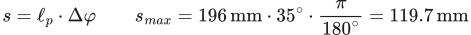
That gives 34–120 mm of travel. For torque balance, the lever arm is the perpendicular distance, not the radius. The foot force is 11.6° off perpendicular, which gives a slightly shorter arm:


The assembled set
The pedal arm is identical on all three pedals. The brake differs in its side plates, which drop the upper through-holes, and in its feel: a coil spring in series with a polyurethane elastomer gives a progressive, firming pedal whose preload and character can be tuned.

The brake's force path
The brake pedal is a single-arm lever. The foot pushes on a long arm rp, and the push rod sits on a much shorter arm rny, so the rod carries several times the pedal force. With the rod mounted straight onto a 2000 N load cell, the cell would see two to three times the pedal force and saturate long before the driver's limit. The fix was to tilt the cell: it only measures the component of the rod force along its sensitive axis.
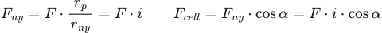
The rod has four mounting holes, and its rear support is shared, so the rod's angle changes with the chosen hole. Moving the mount up reduces the leverage but steepens the rod. The two effects work against each other, and that's deliberate: the ratio of cell force to pedal force stays in a narrow 0.51–0.70 band and is always below 1.
| Position | rny [mm] | i | α [°] | cos α | Fcell / F | Fcell at 2000 N |
|---|---|---|---|---|---|---|
| 1 · lowest | 58.7 | 3.27 | 81.0 | 0.156 | 0.51 | 1018 N |
| 2 | 70.3 | 2.73 | 77.5 | 0.217 | 0.59 | 1187 N |
| 3 | 81.4 | 2.36 | 73.9 | 0.277 | 0.65 | 1308 N |
| 4 · highest | 92.2 | 2.08 | 70.4 | 0.336 | 0.70 | 1400 N |
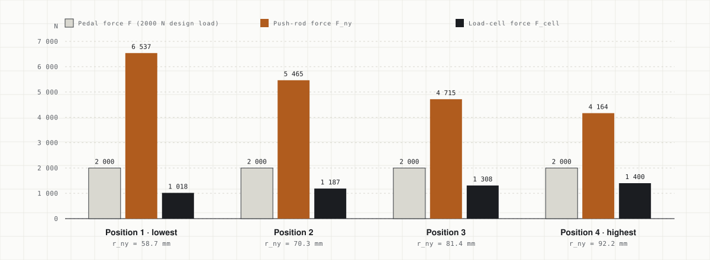
The worst case for the cell is the highest hole. Worked through with the design load:
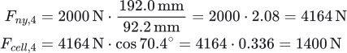
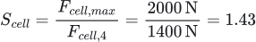
The angle α comes from the nominal CAD geometry, and in reality it drifts with tolerances, assembly play and elastic deflection. How much that matters follows from differentiating the cell force:
A one-degree error in α shifts the reading by about 5%. That is why the angle is not trusted from the drawing: the finished pedal is calibrated in its installed position, which removes the error regardless of where it comes from.
Strength check (FEM)
The pedal arm is the same part on all three pedals, so checking it under the brake's 2000 N covers the worst case. I ran linear static analyses in Autodesk Nastran (Fusion) with a tetrahedral mesh and adaptive refinement. The first result looked alarming, and the most useful lesson came from working out why.
| Model | How the push rod was modelled | σmax | Lesson |
|---|---|---|---|
| #1 | Rod hole as a fixed constraint, highest hole | 548.8 MPa | Refining the mesh pushed it to 783.6 MPa while displacement moved only 0.32%: a stress singularity, not physics. |
| #2 | Same, lowest hole | 459.4 MPa | The hand calculation picked the lowest hole as critical (larger moment); FEM picked the highest, because σ = M/K and the section modulus is much smaller near the upper hole. |
| #3 | Rod as a bearing load of 4164 N, constraint only at the pivot | 437.0 MPa | Physically correct. The artificial peak disappeared, but the hot spot stayed in the same place, so it was a real stress raiser. |
The hot spot sat where the push-rod bracket meets the main body of the arm, and the CAD model had an unintended, sharp transition there. Fixing the geometry and using a larger fillet cut the peak by 17% with practically no added mass: the volume stayed at 128.59 cm³.
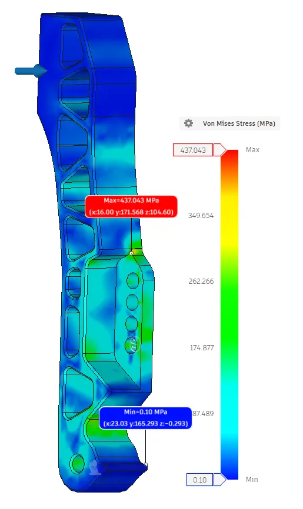
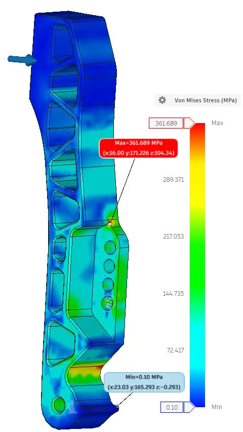
The prototype was machined from EN AW-5083, because that was the stock available. In the thick-plate O/H111 temper it has a minimum yield strength of just 125 MPa. The simulation made the consequence explicit:
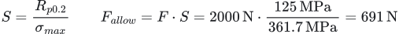
The prototype arm is therefore good for about 691 N, which is enough to prove manufacturability, assembly and function, but not the 2000 N design load. The drawing already specifies a stronger alloy for the final part:
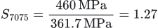
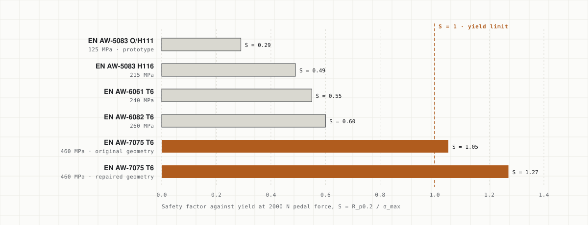
No extra simulation runs were needed for the alloy comparison. With a linear elastic material and force-controlled loading, the stress field of a single-material part doesn't depend on Young's modulus, and yield strength doesn't appear in the solution at all. It only enters afterwards, in the safety factor.
Stiffness is a different question
The largest displacement is 3.96 mm at the top of the arm at 2000 N. That's 2.97 mm at 1500 N, within the 5 mm requirement across the full measuring range. Switching to 7075 does not help here: stiffness is set by Young's modulus (71 vs. 69 GPa, about 3% apart), so the stronger alloy adds strength reserve, not stiffness. More stiffness would need a thicker section.
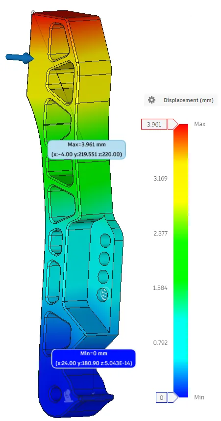
Boundary conditions decide the answer
The welded steel plate that supports the push rod was a second lesson. Fixing only the two bolt holes made it behave like a cantilever, with 1.23 mm of deflection. Adding the contact plane it actually rests on brought that down to 0.127 mm, almost ten times less. In the 5 mm model the peak stress of 350.1 MPa sits where the stiffening ribs meet the upright, which makes S355 steel a borderline pass (S = 1.01) at 2000 N. The prototype plate, however, was cut from 3 mm sheet. Scaled to that thickness, the stress lands at roughly 580–970 MPa (S = 0.24–0.41), so the prototype plate does not meet the requirement and the final version goes back to 5 mm S355.
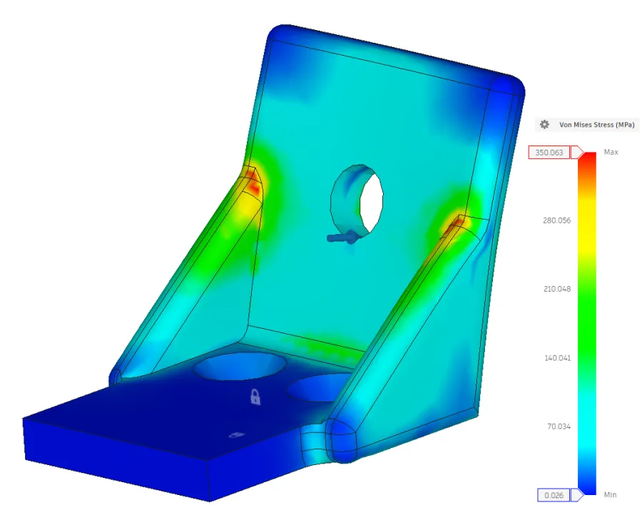
Electronics & signal chain
- Arduino Pro Micro (ATmega32U4, 5 V / 16 MHz) — native USB, so the PC sees it as a game controller without drivers. It also has two 16-bit timers with input capture.
- AS5600 in PWM mode — its I²C address is fixed at the factory, so two identical sensors can't share one bus. Reading the angle from the PWM duty cycle solves that.
- HX711, 24-bit at 80 SPS — reads the brake's load cell. It's cheap, available and good enough to prove the 24-bit concept.
Is the timer fast enough? The AS5600 encodes a 12-bit angle into the length of its PWM pulse. For the measurement to keep the sensor's resolution, each angle step must span at least one timer tick:
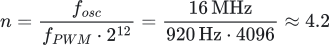
One angle step lasts 265 ns and one timer tick 62.5 ns, so there are about 4.2 ticks per step. That leaves margin for interrupt latency and clock tolerance. The 3.3 V / 8 MHz variant would only reach n ≈ 2.1, which is why I chose the 5 V board. The catch is that the AS5600 drives 3.3 V logic, while the 5 V ATmega needs 3.0 V for a high level. A 0.3 V margin is too little next to a simulator rig, so an HCT buffer (threshold about 2 V) is planned between the two.
The load cell is a full Wheatstone bridge, where strain unbalances four resistors:
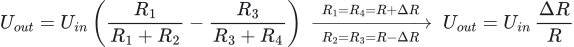
| Stage | Latency |
|---|---|
| AS5600 PWM frame (920 Hz) | ≈ 1.1 ms |
| HX711 conversion (80 SPS) | 12.5 ms |
| Microcontroller processing | < 0.1 ms |
| USB HID report | ≤ 1 ms |
The target is under 10 ms. Throttle and clutch meet it easily, but the brake doesn't: the HX711 alone takes 12.5 ms per sample. That is a known, stated limitation of the prototype, and the final version needs a faster converter.
Firmware
Firmware 0.2 is written in C++ on the Arduino framework. Both channels are smoothed with an exponential moving average, which is cheap on an 8-bit MCU and needs only one stored value per channel:
static const float EMA_ALPHA_BRAKE = 0.50f;
static bool readBrakeRaw(long &rawOut) {
if (!scale.is_ready()) return false; // no new conversion: keep the old value
rawOut = scale.get_value(1);
return true;
}
static void updateBrakeFilter(long raw) {
float x = (float)(BRAKE_SIGN * raw);
if (!g_brake_filter_init) { // first sample seeds the filter
g_brake_filtered = x;
g_brake_filter_init = true;
return;
}
g_brake_filtered += EMA_ALPHA_BRAKE * (x - g_brake_filtered);
}Why the brake signal is a staircase
The HX711 is read without blocking: the firmware only asks for a value once the converter reports it's ready, and otherwise keeps the last filtered value. At 80 SPS against a faster output loop, that shows up as clean steps in the serial plotter. A full press is only about 16 samples, each step a jump of roughly 60 N. It's the converter's rate made visible, and the reason the brake misses the 10 ms target.
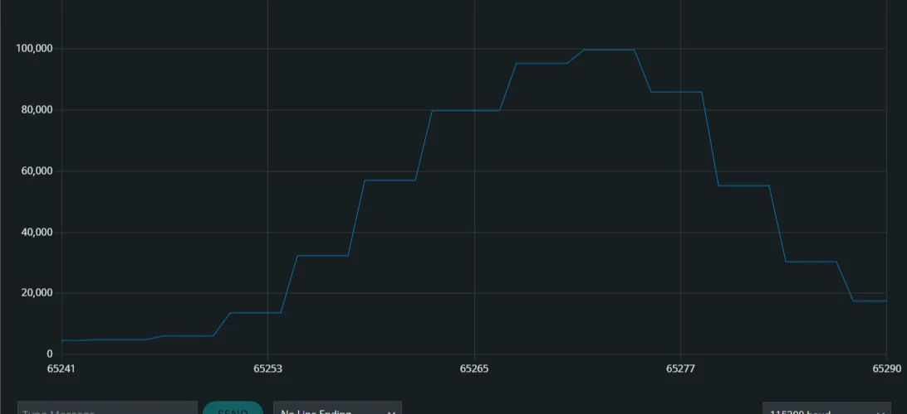
static const float EMA_ALPHA_CLUTCH = 0.15f;
static void updateClutchFilter() {
unsigned long high_us = pulseIn(PIN_CLUTCH_PWM, HIGH, 30000);
if (high_us == 0) return; // timeout: no valid pulse
float x = (float)high_us;
if (!g_clutch_filter_init) {
g_clutch_filtered_us = x;
g_clutch_filter_init = true;
return;
}
g_clutch_filtered_us += EMA_ALPHA_CLUTCH * (x - g_clutch_filtered_us);
}pulseIn is simple but blocking: it waits for the next pulse, up to a 30 ms timeout. The final version will move this to interrupt-driven timer input capture. On the PC side, the firmware speaks a small line-based protocol at 115 200 baud and announces itself as ME-01 Sim Pedals READY;FW=0.2, so the calibration tool can find it among serial ports.
| Command | Effect | Reply |
|---|---|---|
| PING | Connection check | PONG |
| GET | Send one data line immediately | brake:… clutch:… |
| TARE | Zero the load cell with the pedal unloaded and reset the filter | OK,TARE |
| RATE <Hz> | Set the stream rate, 10–100 Hz | OK,RATE,<Hz> |
Status & next steps
Where it is. The prototype is machined from EN AW-5083. Its job was never to be the final product, but to test the design assumptions: that the parts can be made, fit together and work. The firmware reads the brake and clutch channels live. Throughout, the thesis clearly separates what the prototype proves from what the final version still needs.
Next: the repaired pedal arm in EN AW-7075 T6 (S = 1.27) and a 5 mm S355 push-rod support plate. A faster ADC to bring the brake under 10 ms. Interrupt-based PWM capture instead of pulseIn. The HCT level shifter. And a calibration tool that records end stops and maps each pedal through a configurable curve. The curve follows a real boosted hydraulic brake: dead travel, a linear assisted region, then a firmer run-out once the booster saturates.
What I learned. A FEM number means nothing until you know what the boundary conditions are doing to it. The same arm read 783.6 MPa or 437.0 MPa depending on how one hole was modelled. And the most satisfying fix in the project added practically no material.